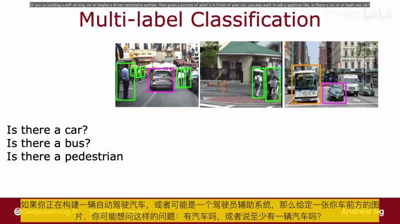
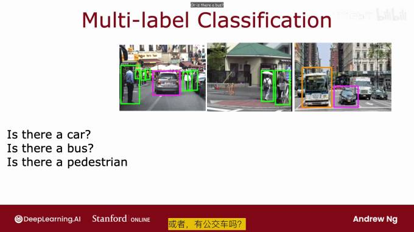
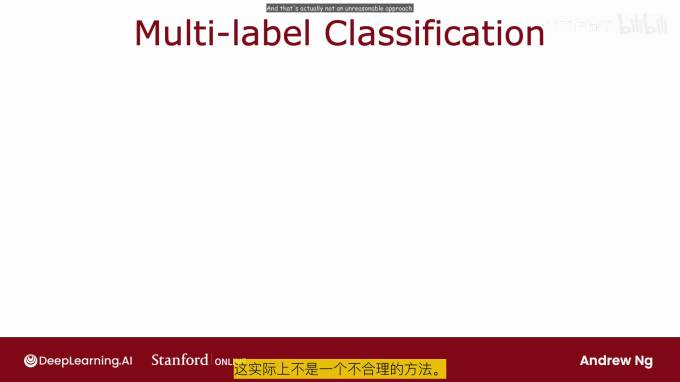
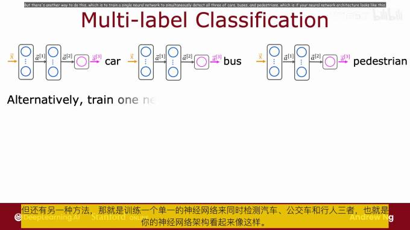

00:03你已经学习了多类别分类，其输出标签 y 可以是两个或可能远远多于两个类别中的任意一个。
00:14还有一种不同类型的分类问题，叫做多标签分类问题，在这种情况下，与每张图像相关联的，可能有多个标签。
00:26我来给你展示一下我指的是什么。
00:29如果你正在构建一辆自动驾驶汽车，或者可能是一个驾驶员辅助系统，那么给定一张你车前方的图片，你可能想问这样的问题：有汽车吗，或者说至少有一辆汽车吗？。

00:46或者，有公交车吗?。

00:53所以在这种情况下，有一辆汽车，没有公交车，并且至少有一名行人。
01:01或者在这第二张图片中，没有汽车，没有公交车，有行人，并且是的，有汽车，有公交车，没有行。
01:13这些就是多标签分类问题的例子，因为与单个输入图像 x 相关联的，是三个不同的标签，分别对应于图像中是否有任何汽车、公交车或行人。
01:32所以在这种情况下，目标输出 y 实际上是一个包含三个数字的向量。
01:39这与多类别分类不同，在多类别分类中，比如手写数字分类，只是一个单一的数字，即使那个数字可以取十个不同的可能值。
01:53那么，你如何为多标签分类构建一个神经网络呢？
01:58一种方法就是将其视为三个完全独立的机器学习问题。你可以构建一个神经网络来判断，有没有汽车。
02:08第二个来检测公交车，第三个来检测行人。
02:13这实际上不是一个不合理的方法。

02:16这是第一个来检测汽车的神经网络，第二个检测公交车，第三个检测行人。
02:24但还有另一种方法，那就是训练一个单一的神经网络来同时检测汽车、公交车和行人三者，也就是你的神经网络架构看起来像这样。

02:40第一个隐藏层输出 A 一，第二个隐藏层输出 A 二。
02:46然后，在这种情况下，最终输出层会有三个输出神经元，将输出 A 三，这是一个包含三个数字的向量。
02:59因为我们正在解决三个二分类问题，即是否有汽车，是否有公交车，是否有行人，你可以为输出层的这三个节点中的每一个使用 sigmoid 激活函数。
03:14所以在这种情况下，A 三将是 A 三一、A 三二和 A 三三，分别对应学习算法认为图像中是否有汽车、和或公交车、和或行人。
03:28所以多类别分类和多标签分类有时会相互混淆。
03:34这就是为什么在本视频中，我也想和你分享一下多标签分类问题的定义，这样根据你的应用，你就可以为你想做的工作选择正确的那个。N。
03:48多标签分类的内容就到这里。
03:52我发现有时多类别分类和多标签分类会相互混淆，这就是为什么我想在本视频中明确地和你分享什么是多标签分类，这样根据你的应用，你就可以为你想做的工作选择正确的工具。
04:11这就结束了本节关于多类和多标签分类的内容。
04:17在下一视频中，我们将开始研究一些更高级的神经网络概念，包括一种比梯度下降更好的优化算法。
04:28所以让我们在下一视频中看看那个算法吧，因为它将帮助你的学习算法学习得更快。
04:35那么让我们继续下一个视频。